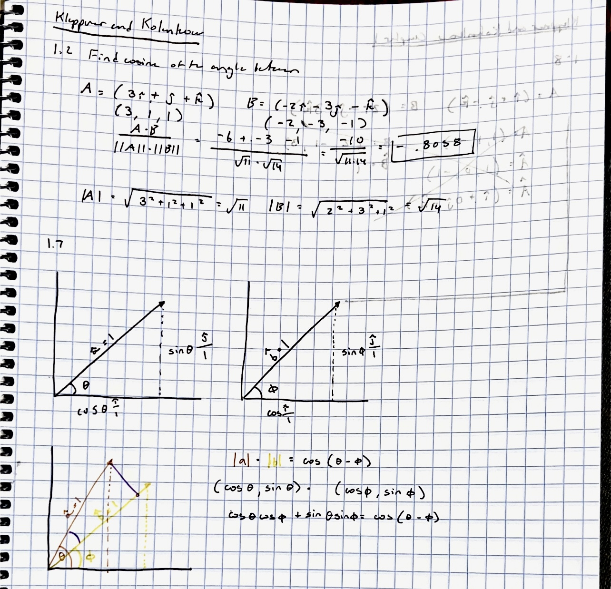

My First Website
How to Teach Yourself Physics: A very brief, useful guide from an expert in proactivity
Hello, this is a quick introduction to myself.
I'm a SIXTEEN!!!!!!!!! year old from Boston. I watched one too many episodes of Cosmos, and now I want to be an astrophysicist
I love cookies n' cream ice cream and kettle corn, also Kirkland Signature dried mango
Through my incredible disciplinary skills, I was so aware of summer college classes, that I applied for none of them
now it is way past the deadline, and I am cramming carefully studying physics on my own
This year, I really hope to qualify for the National Astronomy Competition, so that I can represent the United States in the IOAA!
I hope with this blog I can look at my progress and reminisce on how easy it used to be
Thanks for following my incredible blog!
Sunday August 10th, 2025
I would rather do the NYT Connections than astrophysics!
Hello loyal and unloyal viewers!
The last time I wrote in my blah-g was about after the school year ended. Now it is about a couple of weeks before the school year starts again. This summer, I finally mastered the coordinates of the celestial sphere. Thank gawwwd!! Literally 99% of my worries were around NOT understanding the celestial sphere, but now I kind of get it. I've decided not to be perverted today. I hope that you like to know what the Tropic of Cancer is, and it's NOT just some dirty book (I guess I am being pretty perverted today, sorry Carl Sagan! I promise that I've never read Tropic of Cancer!!)
okay anyways
You probably know that the Earth is tilted by about 23.5 degrees above it's orbital plane. What you might've not known is that the declination of the sun during the summer solstice is reliant on the latitude of the observer. (jargon vomit, I will explain in a moment) Okay, so you're probably familiar with most of the words that I just said, but not from an astronomical perspective. Basically, the summer soltice is when we're receiving the most direct sunlight from the sun, so when we're tilted closest to the sun. So if you're at the equator, you see the sun 23.5 degrees lower than someone who's at a latitude of 23.5 (Like around Cancun if you're a party person). So, if you're in the Tropic of Cancer, which is 23.5 degrees above the equator, then you'll see the sun directly overhead during the summer soltice!! So the next time that you're going to Cancun in the summer, look up!!! (Actually don't....you'll burn your retinas...forget I said that)

I think I'll just pick one up from Costco...
Wednesday June 25th, 2025
h2>
Hello blog viewers! Today I realized how far I have came since January, when I started this mission. When I look at practice tests the problems seem trivial (at least the ones involving Kepler's laws) when they used to seem daunting. Yipee! I also finally understand celestial coordinates. I want to start off with the Alt-Az system. This is in respect to the viewer, not a general system that would work everywhere. A star's altitude is the angle from the the horizon to the zenith (the point directly up from the viewer's perspective). It's azimuth is measured in how far it is from the cardinal coordinate North. It's not uniform, so we also mostly use the RA-Dec system, which is the same everywhere in the world. The right ascension of a star is the angular measure of how far it is from the vernal equinox (where the ecliptic and the celestial equator meet) and declination is the same as altitude, but in reference to the celestial equator.
Anywho, I'm typing all of this out and I'm realizing how good of review it was for me, so thank you blog viewers!!
Tuesday June 10th, 2025
Hello blog viewers! As of now I learned that I have way more blog viewers than I thought. Anywho, it's about the last day of school for me, and I was just thinking about how I basically started off this school year knowning absolutely no astronomy, and I left with a myriad of knowledge. This is thanks to my physics teacher Mr. Smalley. I remember he would show us NASA's astronomy picture of the day and explain it, and I always found it intruiging. I would really just look at the pictures and have no clue what's going on. Like, "oh that's a cloud of dust" or "that's a star", but now I can explain every picture in detail, so I guess I'm kind of grateful that he got me into that. Someone in my English class (who is a recurrent Mr. Smalley glazer) was talking about him like it was his funeral wake or something. I mean, I like him too but I don't think I like him that much. I don't think I'll like any human being that much. Jeez!!!!! (You just had to be there) Anywho, today I learned more about the celestial coordinate system and spherical geometry. I had never really studied this super hard but now I can understand it better. Like I had started off with Caroll and Ostlie, and I think that was a bad idea because that just left me more confused. I think Caroll and Ostlie requires a lot more prerequisite knowledge on spherical coordinates, which I had absolutely none of. Bye bye!!!!
Monday June 2nd, 2025
Greetings Earthlings! I have decided to make my blog weekly or I guess a little bit throughout the week now that I'm closing off the school year. Today I learned virial thereom, which is support important in orbital mechanics. It basically describes the fact that kinetic energy is equal to -1/2 of potential energy, which is super cool and useful in astrophysics, because you can use it to describe multiple body systems and estimate their masses (potential energy) based on their observed velocites, which is super cool! I wish I could get into the derivation but I'm super lazy. I'm hoping that this summer when I can learn a little bit more CSS and have a bit more time I can dive deeper into these subjects, but for now it's the last week of school and my evil geometry teacher is giving me problems (figuratively and literally). I think one thing that I've learned about astronomy is that you really have to think about it. My experiences in high school-level physics is that the problems really just want you to plug and chug and not really think deeper about the concept. I found high school level physics super interesting and I really enjoyed it, but now that I'm diving into college-level physics and astrophysics, my head is hurting and I'm losing confidence. Anywho, physics is not easy!!!!!!!!
Friday May 23rd, 2025
Huge apologies for the hiatus! I have been so so busy (lazy). But that's for a good thing! I've been working my way through B.o.B, or An Introduction to Modern Astrophysics by Caroll and Ostllie (I think I'm spelling that right?) People who read this book call it BOB, which stands for "Big Orange Book" But anywho. I took a look at this textbook and I think I've read the first three chapters one hundred times. However, I've found this is actually the most effective method. If I just read the chapter, kind of understand what the topic is about and how the equation was derived, then I can reread it and take notes. You can't really read it the first time over, because then you wouldn't really retain anything. Anywho, this past week I've been working on orbital mechanics and Kepler's Laws. I'm a huge fan of Johannes Kepler, if you couldn't tell.
But anywho, I need to get serious and not silly.
To begin,
When you're looking at a two body (more arbitrarily, an n body system, calculating their orbits individually would be mathematically egregious. However, the orbits of individual masses are really just around the center of mass. (Phew!) If you take the weighted position vector (basically where an object would be according to it's mass), and multiply it by the face of the system, and then differentiate (take the derivative of position according to time, center of mass velocity!!!!!!!!!!!!), you would get momentum. Take the derivative of momentum and you get force. The net force of the entire system would be zero, because all forces in the system are due to the other objects inside of the system acting upon each other gravitationally. If the net force acting on the system is zero, and it obviously has mass, this means that the acceleration is zero (F=Ma). This means that the center of mass is an inertial reference frame, and you can treat any object in an n-body system as if it was a one body system, orbitting around the center of mass. Pretty neat! 

Monday May 19th, 2025
Hello viewers!
Today was another struggle day! As I have said before, every day is a struggle day when you're learning physics.
Today's subject was Kepler's Laws. I had previously known Kepler's Laws from Science Olympiad, but today was ROUGH. Getting deep, disgusting, nitty and gritty about Kepler's Laws was probably one of the worst things I've done so far.
Anywho,
Kepler said in his first law that all planets orbit in an elliptical shape around the sun, with the sun as one of the foci.
However, Kepler knew that this is what happened, he just couldn't explain it. Newton hadn't introduced his Universal Law of Gravitation yet!
This law changed everything. Now we can explain elliptical orbits and even derive them from Newton's Universal Law of Gravitation.
Once I figure out how to include more equations in my code, I'll go further into depth. However, from Newton's Universal Law of Gravitation, we can connect it to angular momentum (mathematically tee-hee!), and from there, we would eventually get a wonderful conic section that resembles an ellipse! How wonderful! If you asked me whether or not I actually understood the math super deeply, I would say no. I was planning on moving on from Kepler's Laws TODAY, but I think this will go into next week.
"Not explaining science seems to me perverse. When you're in love, you want to tell the world." - Carl Sagan
I guess I am pretty perverse.
bye bye!!!


Sunday May 18th, 2025
Hello numerous viewers! I took a brief hiatus to fix up my code a little bit. Today was a lion day. I learned that term from a youtube video I watched. Basically, you study like a lion, where you just get everything done as quickly and effficiently as possible. That's basically what I did today. However, the most important part I realized was taking breaks. Like after I learned about Newton's laws of gravitation, I was struck with a problem as an afterthought. I was essentially asked to find g, or the acceleration due to gravity. I was completely stuck on this problem, like absolutely bewildered. However, I went on a walk after I got stuck and it eventually came to me. If F=G*m*M/r^2, and F=ma, then acceleration due to gravity is g*m/r^2. So I guess the lesson for today is to just take a quick break and think about it. Sorry for the short entry! Once I learn how to make paragraphs look a little nicer they'll go into further detail.
Bye!!!!!!
Thursday May 15th, 2025
I'm very grateful for the increased interest in my astrophysics blog! I originally thought that this would be something that
Only I would look at, but I have three viewers!
Due to this incredible news, I am going to go over a problem that I did recently which a couple of robotics members were interested in

What you should know about this problem is that it's trying to trick you. It's trying to make you think
that the magnitude matters in this situation, however, the only thing that matters is the period in which the dip happens.
You can see that the peak dip is around in between 2014 and 2015.
Then, again in between 2018 and 2019 it dips again to a small change in apparent magnitude, but still a dip. From there, now you know the period
Once you know the period, you can use Kepler's incredible third law to find the mass off the period and the semi-major axis (given to us in the problem: 14.8 AU
During the Renaissance, or I guess the Scientific Revolution, whatever you call it, Johannes Kepler, an incredible 'natural philosopher' discovered that
the period of an orbiting body is proportional to the semi-major axis of it's orbit. It's summarized in this equation.

Plug and chug and you get our answer, 46 M☉, or 46 times the mass of the sun.
I would be pretty mad if somebody drew a portrait of me that looked like that.
Anywho, today was an easy day, I guess I just reiterated what I had learned yesterday, which was interital frames of reference.
Stay Spacey!! - Lily
Honorable Mention: Anderson Lee
Wednesday May 14th, 2025
Okay a wonderful update. I read the NEXT section of Kleppner and Kolenkow and I finally get it. Do I?
Well to begin, this section essentially lays out Newton's three laws. Which I previously knew from high school level physics (Thanks Mr. Smalley!)
Anywho, the first law was the interesting one that I learned today.
This will be very interesting to my new viewers. Essentially, you know that an object in motion remains in motion unless acted upon by a force.
However, what's NOT taught in high school physics is that Newton is really talking about inertial reference frames
He's talking about in inertial frames, everything is moving at a constant velocity unless acted upon by a force
But anywho, this is the really cool part. An inertial reference frame basically means that an object appears to not be accelerating
Think about it. Imagine you're on the highway inside of an accelerating car. To you, you're stationary, and the road is accelerating. However, to the road, your car is accelerating.
This is really cool!!! Basically, stuff like acceleration, velocity, etc is all relative!! It's all relative!!!!
anywho, what does the car scenario have to do with all this.
I want you to imagine that you're in an accelerating space ship. You float past an asteroid. To the asteroid, you're accelerating. To you, you're stationary and the asteroid is accelerating.
Confused? I was too!
Because you seem stationary in your inertial reference frame, as you move past the asteroid, it seems as if the asteroid is accelerating.
However, the asteroid sees you accelerating!!!!
Now, imagine all the people!
Anywho, today was a wonderful day for me. It was mostly theoretical and less mathematical.
I'm really learning that you have to corroborate different sources of learning.
It can't just all be K&K, or just Professor Dave, or just Walter Lewin, or Flippin' Physics!!
(Honorable mention of the day: Liam Bridgers)
(Honorable mention of the year!: Ilan Bernstein)
Tuesday May 13th, 2025
Captain's log -297636.3404680365
I'm 90% sure that's what Captain Kirk says.
Today was a struggle day (everyday is when you're studying physics!)
I think when people say that physics is easy, they're lying a little bit. Or a lot. Like anybody who thinks that they know quantum mechanics or astrophysics
has clearly never sat in front of a basic mechanics textbook and studied their butt off! It's hard!!! Anywho, here's what I learned today. Even if I learned a little bit,
I still have plenty of time to study basic mechanics (8 months), before my massive astrophysics test against the smartest kids in America
Some people that I know think that they're the smartest kid in America. If I adopt that mindset, maybe I will have the confidence that they have.
Enough self reflection though! Here's some wonderful physics to teach, Feynman style!

The hardest part of a physics problem is getting it started. It more or less looks a little bit easy until you figure out the units. That's HARD
(it's not) One thing I learned from my brand new textbook that was acquired VERY legally is that you have to first tinker around with the units.
see what works, see what doesnt. See how x affects y, see how mass affects acceleration, yada yada (I'm an expert in vocabulary as you can see!)
Anywho, a very silly problem that I got started on included escape velocity. Goofing around with the units of Newton's Universal Law of Gravitation. Basically, you break it
down to the fundamental units. I'm not talking acceleration and force. I'm talking units that don't rely on other units. If you think about it, acceleration is m/s^2
(still figuring out how to have an exponent in my equations lol) however, it all comes down to a couple of silly fundamental units. Mass, length, and time. Pretty much errythang
is made up of this stuff. This is so exciting to me though. Like everything can be connected!! Oh boy, oh boy, the connections! It's wonderful. If we say that length is L, mass is M, and time is T
then by...oh goodie!!! This is all very exciting. I mean think of it - oh boy oh boy this is just pure stream of conciousness at this point- but think of it!
Velocity is literally just distance over time...so L/T...BUT!!!!!!! acceleration is L/T^2....oh my god it's all coming together
anywho, I attempted and failed many of the questions in my new and wonderful textbook. As shown below:

as you can see it's mostly chicken scratch. I can remember doing a lot more thinking. I hope in the future scientists can document the movie going on in my brain when I'm doing physics. It probably looks like Oppenheimer!
now some super boring self-reflection. I've come to realize this is way harder than I thought. Just as I do every day. This will just be a constant spew of "it's hard I swear I swear"
I guess this will be a diary of my thoughts on physics, with a little bit of physics on the side. I don't want to yap too much, but I think it's important to come back down to Earth sometimes
anywho, this was a very exciting day for me physics-wise, because I have been liberated from MIT OpenCourseWare, and am now checking out a little bit calmer of a textbook.
signing off, Lily!!!!

Monday May 12th, 2025
Today is not the first day of my astrophysics journey, I would say my first day of learning astrophysics (for real, for real!)
was January 1st, 2025, which was when I began studying for the Science Olympiad!
the learning curve was horrible. Some days feeling like you really got it, and other days feeling like the dumbest person on the planet
hopefully physics will go this way for me! Right now, everything is pretty much new to me. I just started on differential equations, and I feel extra dumb today
I just finished the first chapter of Kleppner and Kolenkow, which is more or less the most difficult textbook I've ever read
I think what I learned though, is that it's not really that hard until somebody tells you that it's hard.
I got through it, and I'm like 'yeah this is difficult', but now that I hear that it's infamous I feel even more confused.
The questions are definitely VERY difficult.

Here's a wonderful example of a vector problem. As Richard Feynman said: "If you want to master something, teach it."
Therefore, my 1 loyal viewer will get a wonderful tutorial on how to solve a problem like this one!
The cosine of the angle between the two vectors would be the dot product of the vectors divided by the product of their magnitudes.
Basically, you multiply every value (x,y,z) in the vector, and multiply it by the (x,y,z) of the other vector. So if we have vector A(Ax,Ay,Az) and vector B(Bx,By,By)
you would find the product of each individual component of the vector, so (Ax * Bx, Ay * By, Az * Bz), and then add them together!
Like so: (Ax*Bx + Ay*By + Az+Bz)
Now that you know this, you can find the magnitude of the vectors through the pythagorean thereom. I am still very new to programming, so you will have a very terrible version
of a radical. Hopefully I will learn this in the future. For example, the magnitude of A would be the square root of (Ax^2+Ay^2+Az^2)
The magnitude of B would be the same. Now that you know the magnitude of A and B, and the dot product, you can find out the cosine of the angle between them!
The wonderful thing about the dot product is that it's equal to the product of the magnitudes multiplied by the cosine of the angle between them.
This convenience makes it so that we can just divide the dot product by the product of the magnitudes and find the cosine of the angle between them. Yay!
You can see my magical work above.

look at Richard Feynman! isn't he so cute?